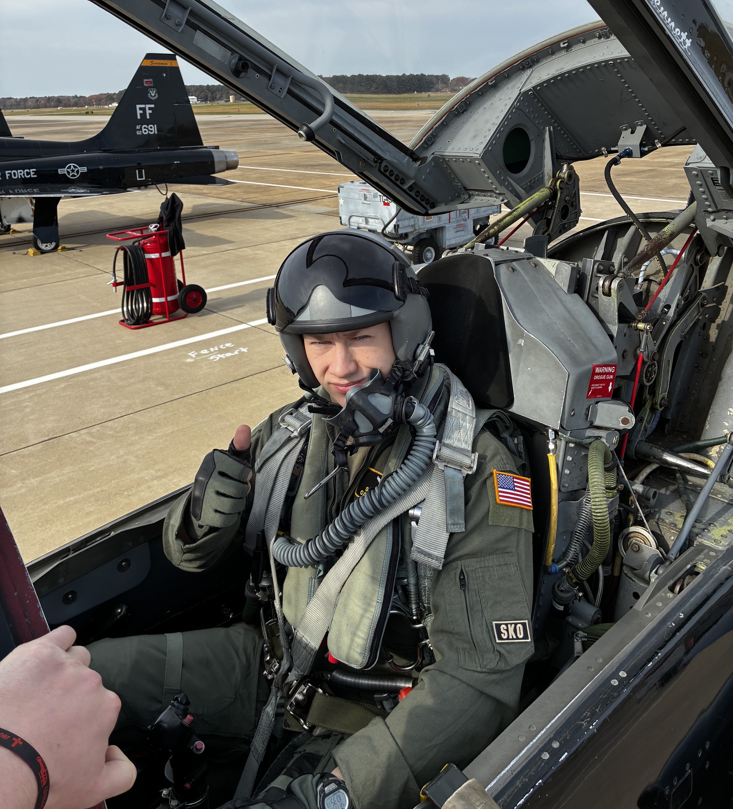

Sam here. I'm a senior in Aerospace Engineering at CU Boulder. I'm currently in the middle of a research project in which I wrote a custom drag estimation model for a quadcopter, and am now flight testing it to verify my model. I have an internship with the OPIR TAP Lab, where I develop software. I don't have a favorite class right now, I've been too busy with my research lately. The most impactful experience I had recently was when I dropped Vance AFB, OK, were I'll be going to Air Force pilot training next year.
My story really starts in high school, when I decided I wanted to fly jets for a living. I wanted to go to CU Boulder because lots of Air Force pilots (and astronauts) have graduated from here, and that caught my attention. I fell backwards into my major, first thinking I would study astrophysics. Then my scholarship provider wanted me to get an engineering degree, so I switched into electrical. Then some of my friends bullied me into finally switching into aerospace, so here I am now. Last November, I had the opportunity to go fly a twin engine supersonic jet trainer and see if this was the right career for me. After that, I know for a fact that it is. I've worked over the last three years to put myself in a good position to recieve a pilot slot in the Air Force, which I earned in May.
One goal I have after college is to go to Test Pilot School. Being a test pilot is where flying meets engineering, and that sounds like a dream. My favorite part about flying is being in control of a machine that's the culmination of hundreds of years of technological innovation, truly at the pinnacle of human technology in the history of the entire world. I am most passionate about becoming the best possible man at my job. Perfection would be great.